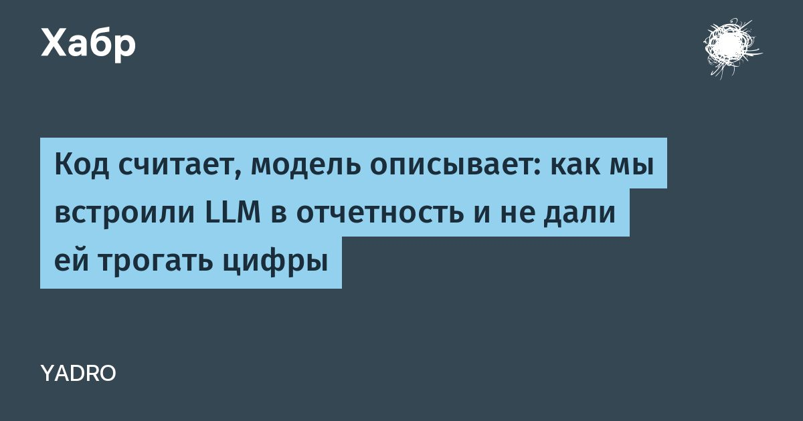

Код считает, модель описывает: как мы встроили LLM в отчетность и не дали ей трогать цифры
Привет, Хабр!
Меня зовут Егор Шлюпиков, и я работаю старшим бизнес-аналитиком в YADRO в большой команде, которая менеджерит IT-оборудование.
Мы следим за парком готовой техники и комплектующих, нужных для работы сотрудников.
Сколько нужно купить, что залежалось, что в ремонте и утилизации и так далее — плюс финансовая аналитика.В статье расскажу, как мы собрали сервис, который снял с нас немалую часть рутины: каждое утро он без участия человека выпускает более десятка отчетов с выводами от нейросети.
При этом ни одно число в отчете не проходит через модель — все считает код, а она только пишет текст.
Раскрою, как мы к этому пришли, зачем понадобился Trino и что делать, когда нужных данных в учетной системе просто нет.
Читать далее